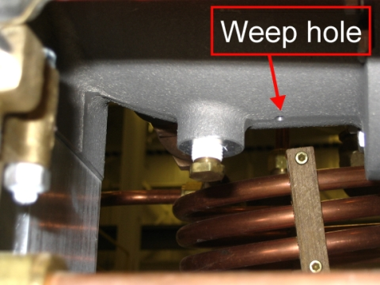

Operating Documentation
Direction 5670006, Rev# 1
Discovery MR750w GEM Service Methods
Module Version 2.0, Version Date 11/17/08
Operating Documentation |
| Required Persons | Preliminary Reqs | Procedure | Finalization |
|---|---|---|---|
| 1 | Not Applicable | Not Applicable | Not Applicable |
| ||||
| Safety hazard! Thoroughly inspect vent systems at sites that experienced a magnet quench. Vent systems have suffered vent joint failures on the 2nd or 3rd quench. Failure to inspect them will result in rupture of vent systems. | ||||
Inspect the vent glass connection inside the magnet room and repair if necessary.
Inspect the weep hole underneath the magnet manifold. (See Illustration 1.)
To determine if debris is preventing drainage of condensation, place a toothpick or other thin, nonmagnetic item into the hole to a depth of one inch.
If debris is present, remove it.
Illustration 1: Weep Hole

Inform the customer that it is time for the annual inspection of their quench duct.
No finalization steps.